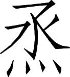

蜀书 · 卷九
董刘马陈董吕传第九
董和，字幼宰，南郡枝江县人，他的先世本来是巴郡江州县人。汉朝末年，他带领宗族向西迁移到益州，益州牧刘璋前后任命他为牛鞞县长、江原县长、成都县令。蜀地富庶充实，当时的风俗奢侈：从事工商业用本钱生利润的家庭，穿的是华丽衣服，吃的是珍美食品；结婚或办丧事，大操大办倾家荡产。董和亲自在俭朴生活方面作出表率，穿粗布衣服，吃以蔬菜为主的饭食，防止生活享受上超越本分的行为，为此制定了标准和规定；所到之处风气都往好的方面改变，人民敬畏而不敢违犯这些标准和规定。但是成都县辖境内的豪强大族害怕董和的严厉法规，暗中劝刘璋改任他为巴东属国都尉。官吏百姓相互邀约去请求让董和继续留任的有数千人之多，刘璋只得同意他留任两年。
先主刘备平定益州，召董和到成都出任掌军中郎将，与军师将军诸葛亮一起处理左将军府、大司马府的公务；进献合理建议，废除不合理的做法，两人结下友好情谊。自从董和当官领取俸禄之后，出外治理边远地区，入内处理机要事务，前后达二十多年，然而他去世时家中却连少量的积蓄也没有。
诸葛亮后来出任丞相，向各位僚属下达指示说：“之所以要设置机要事务的参与处理官员，就是想集思广益啊。如果为了避免小矛盾，就不愿意发表不同意见，那么就会出现政事荒废和失误的损失了。发表不同意见而使政事得到适当处置，就好比丢弃破鞋而得到了珍珠美玉一般。但是人们心中的想法，很难充分说出来，唯有徐元直处在这种情况时能够不犹豫迟疑；还有董幼宰参与处理政务七年，事情如有不周到之处，竟至于返回来十次，报告自己的看法。如果你们能仰慕学习徐元直精神的十分之一，以及董幼宰办事的勤勤恳恳，为国尽忠，那我就可以少犯过失了。”
注释
注释 〖17〗
教：长官对下属下达的指示叫做教。
注释 〖18〗
夫参署者：（之所以要设置机要事务的）参与处理官员。
注释 〖19〗
远小嫌：避免发生小矛盾。
注释 〖20〗
难：不愿意。违覆：发表不同的意见。
注释 〖21〗
旷阙：荒废和失误。
注释 〖22〗
得中：得到适当（的处置）。
注释 〖23〗
弊蹻（juē）：破旧的鞋。
注释 〖24〗
心：这里指心中的想法。
注释 〖25〗
徐元直：即徐庶。徐庶字元直。事见本书卷三十五《诸葛亮传》。
注释 〖26〗
不至：不周到。
注释 〖27〗
十返：返回商量多达十次。
注释 〖28〗
十一：十分之一。
注释 〖29〗
殷勤：办事勤恳的样子。
注释 〖30〗
少过：少犯过错。
又说：“我过去先与崔州平交往，屡次听到他指出我做事的得失；后来又与徐元直交朋友，承蒙他多加启发和指教；此前与董幼宰共同处理政事，每次他进言时都毫无保留；此后又与胡伟度共事，他也多次对我进行规劝阻止。虽然我的素质浅陋愚昧，不能全部采纳他们的意见，但是我与这四位始终保持了友好关系，这也就足以表明他们不会对直言规劝有任何犹豫了。”他就是如此怀念董和。
刘巴，字子初，零陵郡

阳县人。年轻时就很有名，荆州牧刘表多次聘请他任下属，又举荐他为茂才；他都不接受。注释
注释 〖1〗
烝（zhēng）阳：县名。县治在今湖南邵东县东南。
裴注
裴注 ﹝一﹞
《零陵先贤传》曰：“巴祖父曜，苍梧太守。父祥，江夏太守，荡寇将军。时孙坚举兵讨董卓，以南阳太守张咨不给军粮，杀之。祥与同心，南阳士民由此怨祥；举兵攻之，与战，败亡。刘表亦素不善祥，拘巴，欲杀之；数遣祥故所亲信人，密诈谓巴曰：‘刘牧欲相危害，可相随逃之！’如此再三，巴辄不应。具以报表，表乃不杀巴。年十八，郡署户曹史、主记、主簿。刘先（主）欲遣周不疑，就巴学，巴答曰：‘昔游荆北，时涉师门；记问之学，不足纪名；内无杨朱守静之术，外无墨翟务时之风；犹天之南箕，虚而不用。赐书乃欲令贤甥摧鸾凤之艳，游燕雀之宇，将何以启明之哉？愧于‘有若无，实若虚’，何以堪之？’”
刘表去世，曹操南征荆州。先主刘备逃奔江南，荆州名流跟随他的络绎不绝，而刘巴却独独往北去投奔曹操。曹操任命他为下属，让他去招降长沙、零陵、桂阳三郡。碰上先主前来攻占这三郡，刘巴不能回北方复命，又向南逃奔交阯；先主对此深为不满。
刘巴又从交阯来到益州。没有多久先主又平定了益州。刘巴为自己从前不肯归附先主的罪过深表歉意，先主没有责备他。由于诸葛亮多次称赞推荐，先主就任命他为自己左将军府的西曹掾。汉献帝建安二十四年（公元 219），先主为汉中王，刘巴任尚书。后又代替法正任尚书令。他为人清廉俭朴，不置私人产业。又觉得自己是后来归附者，而不是素来追随先主的老部下，害怕受到猜疑；所以恭敬沉默安安静静，从官署下班后没有私人交往，不是公事不会发表意见。
裴注
裴注 ﹝四﹞
《零陵先贤传》曰：“巴入交阯，更姓为张。与交阯大守士爕计议不合，乃由牂牁道去。为益州郡所拘留，太守欲杀之。主簿曰：‘此非常人，不可杀也！’主簿请自送至州，见益州牧刘璋。璋父焉，昔为巴父祥所举孝廉，见巴惊喜；每大事，辄以咨访。”臣松之按：刘焉在汉灵帝时，已经宗正、太常；出为益州牧，祥始以孙坚作长沙时，为江夏太守：不得举焉为孝廉，明也。
裴注 ﹝五﹞
《零陵先贤传》曰：“璋遣法正迎刘备，巴谏曰：‘备，雄人也，入必为害；不可纳也！’既入，巴复谏曰：‘若使备讨张鲁，是放虎于山林也！’璋不听，巴闭门称疾。备攻成都，令军中曰：‘其有害巴者，诛及三族！’及得巴，甚喜。”
裴注 ﹝六﹞
《零陵先贤传》曰：“张飞尝就巴宿；巴不与语，飞遂忿恚。诸葛亮谓巴曰：‘张飞，虽实武人，敬慕足下。主公今方收合文武，以定大事；足下虽天素高亮，宜少降意也。’巴曰：‘大丈夫处世，当交四海英雄；如何与兵子共语乎！’备闻之，怒曰：‘孤欲定天下，而子初专乱之。其欲还北，假道于此，岂欲成孤事邪！’备又曰：‘子初才智绝人，如孤，可任用之；非孤者，难独任也！’亮亦曰：‘运筹策于帷幄之中，吾不如子初远矣。若提枹鼓，会军门，使百姓喜勇，当与人议之耳。’初攻刘璋，备与士众约：‘若事定，府库百物，孤无预焉！’及拔成都，士众皆舍干戈，赴诸藏竞取宝物；军用不足，备甚忧之。巴曰：‘易耳！但当铸直百钱，平诸物价，令吏为官市。’备从之，数月之间，府库充实。”
裴注 ﹝七﹞
《零陵先贤传》曰：“是时，中夏人情未一，闻备在蜀，四方延颈；而备锐意欲即真。巴以为‘如此示天下不广，且欲缓之’。与主簿雍茂谏备。备以他事，杀茂；由是远人不复至矣。”
先主称尊号，昭告于皇天上帝、后土神祗，凡诸文诰策命，皆巴所作也。
先主称帝，向皇天上帝、大地之神所作的公开祷告文书，以及有关的一切文告和封爵任官的文书，都出自刘巴之手。
章武二年，卒。卒后，魏尚书仆射陈群，与丞相诸葛亮书，问巴消息，称曰“刘君子初”，甚敬重焉。﹝八﹞
先主章武二年（公元 222）他去世。去世之后，魏朝的大臣尚书仆射陈群，与诸葛亮写信，询问刘巴的消息，称之为“刘君子初”，非常敬重他。
裴注
裴注 ﹝八﹞
《零陵先贤传》曰：“辅吴将军张昭，尝对孙权论巴褊隘，不当拒张飞太甚。权曰：‘若令子初随世沉浮，容悦玄德，交非其人，何足称为高士乎？’”
马良字季常，襄阳宜城人也〖1〗。兄弟五人，并有才名；乡里为之谚曰：“马氏五常，白眉最良。”良眉中有白毛，故以称之。
马良，字季常，襄阳郡宜城县人。他们兄弟五人，都以具有才能而著名，家乡人为他们编了一条谚语：“马家五个‘常’，白眉最优良。”马良的眉毛中有白毛，所以人们这样称呼他。
注释
注释 〖1〗
宜城：县名。县治在今湖北宜城市东南。
先主刘备兼任荆州牧，聘请他担任从事。先主进入益州，诸葛亮后来也前往。马良留在荆州，与诸葛亮写信说：“听说雒城已被攻克，真是上天保佑啊。仁兄顺应上天的安排，辅佐当代君主，参与大业光耀国家，这样的征兆已经出现了。谋求变化要运用您正确合理的考虑，弄清情况要依仗您的洞察能力，至于选拔人才，应当说正是时候了。如果能普遍而公平地施行仁政，使远方的人喜悦归心；在天地间尽力施与恩德，使当今的人熟悉道德，服从正道；建立高尚美好的教化，纠正败坏的风俗时尚；各项政事都顺利实施，不会彼此打乱顺序：这种政治就好比是音乐的最高境界，伯牙、师旷才能奏出的曲调啊。我虽然不是知音的钟子期，却怎敢不敲击节拍参加这种曲调的合奏呀！”
注释
注释 〖2〗
天祚：上天保佑。
注释 〖3〗
应期：顺应上天的安排。赞世：辅佐当代。
注释 〖4〗
配业：参与大业。
注释 〖5〗
魄兆：征兆。
注释 〖6〗
变用雅虑：谋求变化要运用您正确合理的考虑。
注释 〖7〗
审贵垂明：弄清情况要依仗您的洞察能力。
注释 〖8〗
简才：选拔人才。
注释 〖9〗
和光：共同接受阳光的照耀。《老子》第四章有“和其光，同其尘”的话。这里比喻普遍而公平地施行仁政。悦远：使远方的人喜悦归心。
注释 〖10〗
迈德：尽力施与恩德。
注释 〖11〗
使时闲于德：使当代的人熟悉道德。
注释 〖12〗
郑、卫之声：先秦时郑、卫二国流行轻曼柔靡的音乐，后来即以郑、卫之声指不正派的靡靡之音。这里则比喻败坏的风俗时尚。
注释 〖13〗
夺伦：打乱次序。
注释 〖14〗
管弦之至：音乐的最高境界。
注释 〖15〗
牙：即伯牙。古代著名的音乐家。善于鼓琴。他的好友钟子期，最能理解欣赏他的演奏。事见《吕氏春秋•本味》。旷：即师旷。春秋时晋国著名的音乐家，也善于鼓琴。事见《史记》卷二十四《乐书》。
注释 〖16〗
钟期：即钟子期。
注释 〖17〗
节：一种竹制的乐器。用来敲击节拍。这里用击节表示自己愿为刘备的事业尽力。
裴注
裴注 ﹝一﹞
臣松之以为：良盖与亮结为兄弟，或相与有亲；亮年长，良故呼亮为“尊兄”耳。
接着先主任命马良为左将军府的下属。后来他受命出使孙吴，马良对诸葛亮说：“而今我接受国家委派的使命，和睦双方；如果您能为我给孙权将军写一封私人介绍信，那我就幸运了。”诸葛亮说：“您试着自己起草文稿吧。”马良就起草说：“我国君主派遣下属马良前来访问加深友谊，以继承昆吾、豕韦那共同辅助王室的功勋。马良才华突出，是荆州的优秀人物；虽然缺少临机应变的口辩，却有很好完成任务的能力。希望您屈尊安抚接纳，以慰勉身负使者的人。”孙权对马良很尊敬优待。
先帝称帝，任命马良为侍中。后来东下征吴，先主派马良进入武陵郡争取居住在五溪的少数族；少数族首领都接受了先主赏赐的官印、官号，一切都符合先主最初的考虑打算。不久先主在夷陵大败，马良也在当地遇害身死。
先主拜良子秉为骑都尉〖30〗。
先主任命他的儿子马秉为骑都尉。
注释
注释 〖30〗
骑都尉：官名。统领皇帝侍卫队中的骑兵小分队。
良弟谡，字幼常。以荆州从事随先主入蜀。除绵竹、成都令，越嶲太守〖1〗。
马良的弟弟马谡，字幼常。以荆州从事的身份随从先主入益州，前后任绵竹县令、成都县令、越嶲郡太守。
注释
注释 〖1〗
除：朝廷的正式任命称为除。
才器过人，好论军计；丞相诸葛亮深加器异。先主临薨谓亮曰：“马谡言过其实，不可大用：君其察之！”亮犹谓不然，以谡为参军；每引见谈论，自昼达夜。﹝一﹞
他的才能气度超过常人，喜欢议论军事计谋；丞相诸葛亮对他深为器重。先主临死前对诸葛亮说：“马谡的言论超过了自己的实际才干，不可大用：您要察觉这一点。”诸葛亮还认为不然，任命马谡为军事参谋；每次召见他谈话，都从白天一直谈到夜晚。
裴注
裴注 ﹝一﹞
《襄阳记》曰：“建兴三年，亮征南中；谡送之数十里。亮曰：‘虽共谋之历年，今可更惠良规。’谡对曰：‘南中恃其险远，不服，久矣。虽今日破之，明日复反耳。今公方倾国北伐，以事强贼；彼知官势内虚，其叛亦速。若殄尽遗类，以除后患；既非仁者之情，且又不可仓猝也。夫用兵之道：攻心为上，攻城为下；心战为上，兵战为下：愿公服其心而已。’亮纳其策，赦孟获以服南方。故终亮之世，南方不敢复反。”
后主建兴六年（公元 228），诸葛亮出兵祁山进行第一次北伐。当时战斗经验丰富的将领有魏延、吴壹等人，议论的人都说应当在他们中间选择先锋官；而诸葛亮拒绝众人意见提拔马谡，让他指挥前锋的大队人马。他与魏将张郃在街亭激战，结果被张郃击败，军队溃散。诸葛亮前进失去依据，只得退回汉中。马谡被逮捕入狱处死，诸葛亮因此而流泪。马良死时三十六岁，马谡死时三十九岁。
裴注
裴注 ﹝二﹞
《襄阳记》曰：“谡临终，与亮书曰：‘明公视谡犹子，谡视明公犹父；愿深惟殛鲧兴禹之议，使平生之交不亏于此：谡虽死，无恨于黄壤也！’于时十万之众，为之垂涕。亮自临祭，待其遗孤若平生。蒋琬后诣汉中，谓亮曰：‘昔楚杀得臣，然后文公喜可知也。天下未定而戮智计之士，岂不惜乎？’亮流涕曰：‘孙武所以能制胜于天下者，用法明也；是以杨干乱法，魏绛戮其仆。四海分裂，兵交方始；若复废法，何用讨贼邪！’”习凿齿曰：“诸葛亮之不能兼上国也，岂不宜哉！夫晋人规林父之后济，故废法而收功；楚成暗得臣之益己，故杀之以重败。今蜀僻陋一方，才少上国；而杀其俊杰，退收驽下之用；明法胜才，不师三败之道：将以成业，不亦难乎？且先主诫谡之不可大用，岂不谓其非才也？亮受诫而不获奉承，明谡之难废也。为天下宰匠，欲大收物之力，而不量才节任，随器付业。知之大过，则违明主之诫；裁之失中，即杀有益之人：难乎其可与言智者也。”
陈震字孝起，南阳人也。先主领荆州牧，辟为从事，部诸郡〖1〗。随先主入蜀；蜀既定，为蜀郡北部都尉，因易郡名为汶山太守。转在犍为。
陈震，字孝起，南阳郡人。先主刘备兼任荆州牧，聘任他为从事，先后督察州内下属各郡。接着又随先主西上益州。益州平定之后，他担任蜀郡北部都尉。后来蜀郡北部改为汶山郡，他担任太守。又转任犍为郡太守。
注释
注释 〖1〗
部：督察。当时州政府有部郡国从事，负责督促郡国公文，举报郡国官员的不法行为。
后主建兴三年（公元 225），他入朝任尚书。升任尚书令，并奉命出使吴国。建兴七年（公元 229），孙权称帝，蜀国任命陈震为卫尉，去庆贺孙权登基。诸葛亮与在孙吴的哥哥诸葛瑾写信说：“孝起忠诚纯洁的品性，到老来更加突出；他在赞美称述东吴、西蜀，使双方愉快友好的方面，有可贵的贡献。”
陈震进入孙吴辖境，给孙吴守卫边境的官员递交一份公文说：“东西两国之间，乘坐驿站车马的使者往来不断，彼此都在路上望见；申明盟约加深友谊，每天这方面的事情都有新进展。贵国君主保有神圣的福分，祭告上天而承受上天的指命称帝，与我国分割天下土地；人民群起响应，从此各有归属。在这个时候，双方同心讨伐曹贼，什么敌人不能消灭呢！我国的君臣，都急于听到贵国的好消息，并且欣然把贵国作为可以依靠的外援。陈震我没有才德，有幸充当下等的使者，奉命拜访贵国叙述友谊；进入贵国地界后兴奋得跳跃起来，热情的接待使我有回家的感觉。从前范献子出使鲁国，在询问山名时犯了鲁国君主的名讳，《春秋》曾经讥评他；希望一定把贵国有关的避讳告诉我，让我能使双方关系和睦。从今天起我就悬挂旗帜告诫部下，各自起誓约束自己。顺流而下的船前进迅速，而两国法制彼此不同；恐怕有所违背，希望一定给予指点，说明怎样做才适当。”
注释
注释 〖7〗
移：不相统属的官府之间发送公文。关侯：官名。守卫边关。这里指蜀、吴边境上孙吴一方的关侯。
注释 〖8〗
冠盖：礼帽与车盖。代指官员。
注释 〖9〗
东尊：指孙权。
注释 〖10〗
告燎：祭祀名。称帝时设坛祭告上天，点燃柴火，把献给上天的礼品放在柴堆上一并燃烧，叫做告燎。又叫燎柴。受符：接受上天赐给的符命。
注释 〖11〗
剖判土宇：（与蜀汉）分割天下的土地。
注释 〖12〗
引领：伸长脖子。比喻急于听到好消息。
注释 〖13〗
践界：踏上边界。踊跃：（兴奋得）跳跃起来。
注释 〖14〗
献子：即范献子。士氏，名鞅。春秋时晋国的臣僚。
注释 〖15〗
犯其山讳：《国语•晋语》九记载：前 521 年，范献子出使鲁国，询问具山、敖山。由于鲁国从前的君主中，鲁献公名敖，鲁武公名具，所以范献子询问这两座山犯了鲁国君主的名讳，他为此深感羞愧。
注释 〖16〗
启告：启示告知（在孙吴的注意事项）。
注释 〖17〗
行人：使者。
注释 〖18〗
旍（jīng）：古代一种用牦牛尾和羽毛装饰的旗帜，用于指挥或开道。诰众：告戒部下。
注释 〖19〗
疾：快速。
注释 〖20〗
国典异制：两国典章的内容不同。
注释 〖21〗
斟诲：加以考虑和教诲。
陈震到达当时孙吴的都城武昌，孙权与陈震登坛歃血为盟，中分天下：以曹魏的徐、豫、幽、青四州，归吴国；曹魏的并、凉、冀、兖四州，归蜀国；余下的曹魏司州土地，以函谷关为界，东面归吴，西边归蜀。陈震回来后，封为城阳亭侯。
建兴九年（公元 231），都护李平因造谣欺骗朝廷而被废黜。诸葛亮与长史蒋琬、侍中董允写信说：“孝起此前出使孙吴临出发时，对我说‘李平性格孤傲就像腹内长了鳞甲一样，同乡人都认为他很难接近’。我觉得有鳞甲只要不去触犯他就行了；没有想到他又会出其不意仿效苏秦、张仪玩弄诡诈手段。可以让孝起知道这一切。”
十三年〖29〗，震卒。子济嗣。
建兴十三年（公元 235），陈震去世。他的儿子陈济继承了爵位。
注释
注释 〖29〗
后主继承帝位，他升任黄门侍郎。丞相诸葛亮将要北伐中原，先进驻汉中；顾虑后主年纪轻，难以区分好坏是非；因为董允秉心公正，想委任他主管皇宫事务。便上了一道后世称为《出师表》的奏疏给后主，其中说：“侍中郭攸之、侍中费祎、黄门侍郎董允等，是先帝把他们挑选来留给陛下的”；“至于对政事进行斟酌改革，充分进献忠言，这就是他们的责任了”；“愚臣以为皇宫的事务，无论大小，都应当咨询他们，然后再施行，必定能弥补缺陷遗漏，吸收更多的有益意见”；“如果没有帮助陛下培养品德的言论，就责问董允等人以公开他们的过失”。没多久诸葛亮请求调费祎为自己的军事参谋；董允则升任侍中，兼虎贲中郎将，统领侍卫皇帝的贴身武士。郭攸之性情素来和顺，他当侍中只是充数而已；至于进献自己的忠言吸纳皇宫外群臣的有益建议，这方面的任务就由董允一人承担了。
董允处理皇宫事务能预防制止奸邪，很能尽心匡正和补救后主的过失。后主曾经想选取美女扩充后宫，董允认为“古时候天子后妃的人数不超过十二人，现今妃嫔人数都已够了，不应当再增加”，始终不同意。后主因此更敬畏他。
尚书令蒋琬领益州刺史，上疏以让费祎及允；又表“允内侍历年，翼赞王室〖12〗，宜赐爵土以褒勋劳”。允固辞不受。
尚书令蒋琬兼任益州刺史，上疏把这一职务让给费祎和董允；又上表说“董允在皇宫内侍奉陛下多年，辅助皇朝，应当赐给爵位、封地以褒奖其勋劳”。董允坚辞不受。
注释
注释 〖12〗
翼赞：辅佐扶助。
后主逐渐长大之后，宠爱宦官黄皓。黄皓善于逢迎谄媚，会说花言巧语，生性狡黠，一心想取悦刘禅使之接纳和看重自己。董允常常对上严肃匡正后主，对下斥责黄皓；黄皓害怕董允，不敢为非作歹。董允在世时，黄皓的官位最高也不过是黄门丞。
董允曾经与尚书令费祎、中典军胡济等共同约定时间去外边游玩饮宴；物品和车辆都已准备好以后，却碰上担任郎中的襄阳郡人董恢前来谒见董允表示敬意。董恢年轻官小，看到董允正要外出，退缩着想要告辞。董允不同意，说：“我之所以外出的本意，是想与志趣相投的人游玩谈心啊。现今您已经委屈自己前来，正要畅谈分别以后积累的思念；放弃这里的谈话，去赴那边的聚会，说不过去啊。”于是命令解开驾车的马，费祎等人也都停车不走了。董允的坚守正道尊重人士，就像是这样。
注释
注释 〖17〗
期：预定时间。
注释 〖18〗
严驾：物品和车辆。
注释 〖19〗
修敬：表示敬意。指拜望。
注释 〖20〗
停出：正要出门。
注释 〖21〗
自屈：委屈自己（前来）。
注释 〖22〗
阔积：分别以后积聚的思念。
注释 〖23〗
非所谓：说不过去。
注释 〖24〗
骖：驾车的马。
裴注
裴注 ﹝二﹞
《襄阳记》曰：“董恢字休绪，襄阳人。入蜀，以宣信中郎，副费祎使吴。孙权尝大醉问祎曰：‘杨仪、魏延，牧竖小人也。虽尝有鸣吠之益于时务，然既已任之，势不得轻；若一朝无诸葛亮，必为祸乱矣！诸君愦愦，曾不知防虑于此，岂所谓贻厥孙谋乎？’祎愕然，四顾视，不能即答。恢目祎曰：‘可速言：仪、延之不协，起于私忿耳，而无黥、韩难御之心也。今方扫除强贼，混一区夏；功以才成，业由才广。若舍此不任，防其后患；是犹备有风波而逆废舟楫，非长计也。’权大笑乐。诸葛亮闻之，以为知言。还，未满三日，辟为丞相府属。迁巴郡太守。”臣松之按：《汉晋春秋》亦载此语，不云董恢所教，辞亦小异；此二书俱出习氏而不同若此。本传云“恢年少官微”，若已为丞相府属，出作巴郡，则官不微矣。以此疑习氏之言为不审的也。
延熙六年，加辅国将军。七年〖25〗，以侍中守尚书令，为大将军费祎副贰。
延熙六年（公元 243），他加任辅国将军。第二年，以侍中身份代理尚书令职务，充当大将军费祎的助手。
注释
注释 〖25〗
七年：延熙七年（公元 244）。
陈祗代替董允为侍中，与黄皓内外勾结；黄皓才开始参预政事。陈祗死后，黄皓从黄门令，升任中常侍、奉车都尉，把持玩弄威权，终于导致国家灭亡。蜀人这时无不怀念董允。到了邓艾灭蜀，听说黄皓奸恶凶险，下令逮捕关押他，准备除掉；而黄皓以重礼贿赂邓艾的随从，才得免死。
陈祗，字奉宗，汝南郡人。是许靖哥哥的外孙。他从小死去父亲，在许靖家长大，二十岁左右就已出名。逐渐升迁到选曹尚书郎的职位。他为人矜持严厉而容貌威严。多才多艺，又有心计和手段。费祎很器重他，所以提拔他继董允之后担任侍中。
吕乂卒，祗又以侍中守尚书令，加镇军将军。大将军姜维虽班在祗上，常率众在外，希亲朝政。祗上承主指〖8〗，下接阉竖；深见信爱，权重于维。
吕乂死后，陈祗又以侍中身份代理尚书令职务，加任镇军将军。大将军姜维虽然地位在陈祗之上，但是常常率众在外，很少过问朝政。陈祗上承后主旨意，下管宫廷宦官；深受后主的信任喜爱，实权反而比姜维还大。
注释
注释 〖8〗
主指：君主的意图。
景耀元年（公元 258）陈祗去世，后主痛惜不已，一说起就流泪。并下诏说：“陈祗任侍中职务长达十二年，柔顺美好，遵循规矩，干练严肃，很有章法；和蔼忠义，造福百姓，各项公务办得恰当清楚。可惜寿命不长久，朕因此很痛惜他！凡是生前建立美名的，死后都要给予好谥号。现在谥他为忠侯。”又赐陈祗的长子陈粲关内侯的爵位，提拔他的二儿子陈裕为黄门侍郎。
自从陈祗得宠，后主对已故的董允越来越恨，认为董允轻视自己；这都是由于陈祗谄媚后土，而黄皓设法诋毁董允并逐渐产生作用的缘故。
允孙宏，晋巴西太守。﹝一﹞
董允的孙子董宏，晋朝时曾任巴西郡太守。
裴注
裴注 ﹝一﹞
臣松之以为：陈群子泰，陆逊子抗，传皆以子系父，不别载姓；及王肃、杜恕、张承、顾邵之流，莫不皆然；惟董允独否，未详其意。当以允名位优重，事迹逾父故邪？夏侯玄、陈表并有骍角之美，而亦如泰者：《魏书》总名此卷云《诸夏侯曹传》，故不复稍加品藻；陈武与表，俱至偏将军，以位不相过故也。
吕乂字季阳，南阳人也。父常，送故将（军）刘焉入蜀〖1〗；值王路隔塞，遂不得还。乂少孤，好读书鼓琴。
吕乂，字季阳，南阳郡人。父亲吕常，护送以往曾任南阳郡太守的刘焉到益州；碰上通往朝廷的道路断绝，结果未能回去。吕乂从小死去父亲，喜欢读书弹琴。
注释
注释 〖1〗
故将：过去的郡太守。当时习称郡太守为郡将，故将即故郡将。刘焉曾任南阳郡太守，对吕常而言是故将。
起初，先主刘备平定益州，设置盐府校尉，垄断盐铁生产带来的利润；后来盐府校尉请求委派吕乂，以及南阳郡人杜祺、南乡郡人刘幹，一齐担任自己府署的典曹都尉。吕乂接着升任新都县令、绵竹县令，心中怜悯民众而加意抚恤；受到百姓的称赞，政绩列为全益州各县之首。不久他升任巴西郡太守。
丞相诸葛亮连年出兵，向各郡征调新兵时，大多不能向前线及时补充兵源；而吕乂在本郡招收五千人到诸葛亮大营去时，对新兵安慰约束，竟然没有一个逃跑的。他转任汉中郡太守，兼任督农，以供给军粮。
诸葛亮死后，他先后升任广汉郡、蜀郡太守。蜀郡是一州的中心区域；人口众多，在诸葛亮死后，这里又有大批逃亡士兵，他们冒名顶替，在户口上搞的花样不止一种。吕乂到任后，在这方面采取预防和禁止措施，教育劝导；几年之间，黑人黑户主动出来登记的有一万多人。
后来他奉调入朝担任尚书。又继董允之后任尚书令，各项公务没有滞留和耽搁，门外也没有等待公务处理的来人。吕乂历任皇宫内外的职务，要求自己俭朴节约，为人谦虚安静，少言寡语；行政措施简要而不烦琐，人们对他有清廉能干的评价。不过他执行法律苛刻深重，喜欢使用熟悉法律规章条款但是文化素养不高的办事人员；所以他在出任尚书令之后，名声反而不如他在当郡县行政长官时好了。后主延熙十四年（公元251），吕乂去世。
他的儿子吕辰，在后主景耀年间任成都县令。吕辰的弟弟吕雅，曾任谒者仆射。吕雅为人清廉严格而有文才，曾著《格论》十五篇。
杜祺，历郡守、监军、大将军司马；刘幹，官至巴西太守。皆与乂亲善，亦有当时之称〖18〗；而俭素守法，不及于乂。
杜祺，历任郡太守、监军、大将军府司马；刘幹，官做到巴西郡太守。他们都和吕乂亲近友善，也因为有从政才能而受到称赞；但是在俭朴守法方面，他们都不及吕乂了。
注释
注释 〖18〗
当时：合乎时代需要。指具有从政的才能。
评论说：董和的品质像羔羊皮一样洁白；刘巴具有清高的节操；马良正直诚实，被称为优秀人物；陈震忠诚谨慎，到老年益发突出；董允匡正君主，正义之气表现在脸上：都是蜀国的良臣啊。吕乂治理各郡时留下美名，入朝任职则声誉受损，也是汉朝黄霸、薛宣一类的人了。
注释
注释 〖1〗
羔羊：小羊。《诗经》中有《羔羊》一篇。素：白色。《诗经•羔羊》有“羔羊之革，素丝五 ”的句子，古人认为是赞美周文王时官员节俭正直，品德像小羊皮毛一般洁白。但现今学者的理解与此不同。
注释 〖2〗
忠恪：忠诚谨慎。
注释 〖3〗
垂称：留下美名。
注释 〖4〗
黄：指黄霸（？—前 51）。字次公。淮阳郡阳夏（今河南太康县）人。西汉宣帝时任扬州刺史、颍川郡太守，政绩评为天下第一。后调中央任御史大夫、丞相，表现远不如从前。传见《汉书》卷八十九。薛：指薛宣。字赣君。东海郡郯县（今山东郯城县西北）入。西汉成帝时，任临淮、陈留二郡太守，又任左冯翊（píng yì），政绩突出。后调中央任御史大夫、丞相，因表现平平，被免职削爵。传见《汉书》卷八十三。流亚：同样的人物。